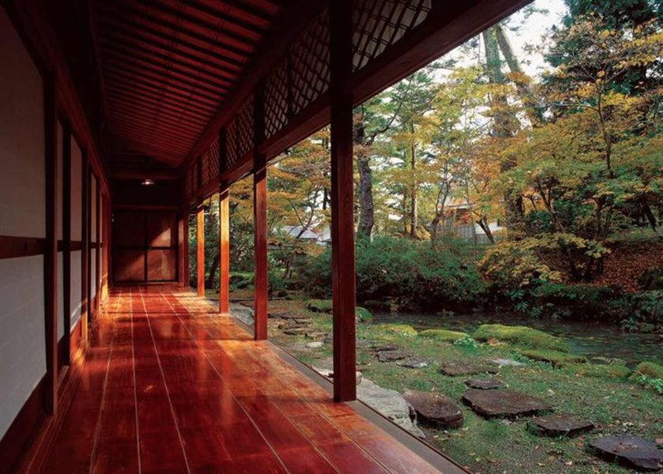

Läs mer om arkitektur
- Tadao Ando – presentation hos Pritzkerpriset
- Kengo Kuma and Associates – arkitektkontorets webbplats
Bilderna används för att diskutera form, material och ljus. De är inte identifierade som verk av arkitekterna i länkarna ovan.
